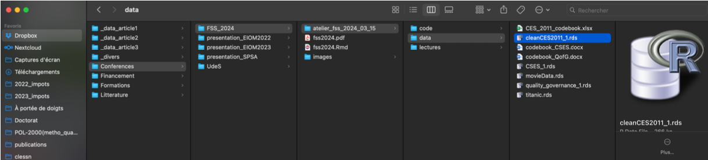
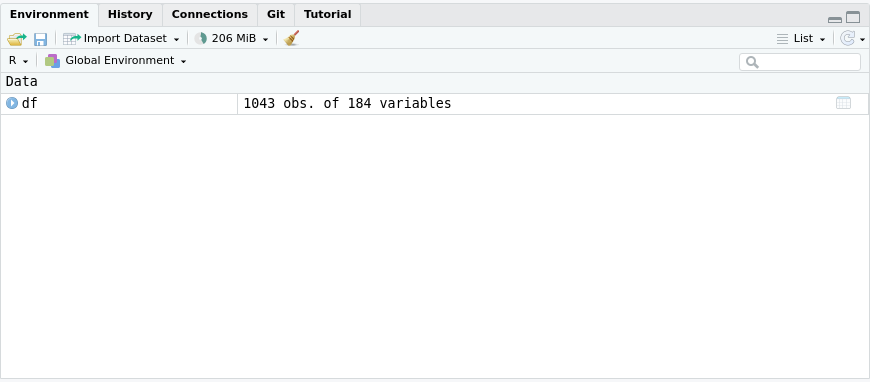
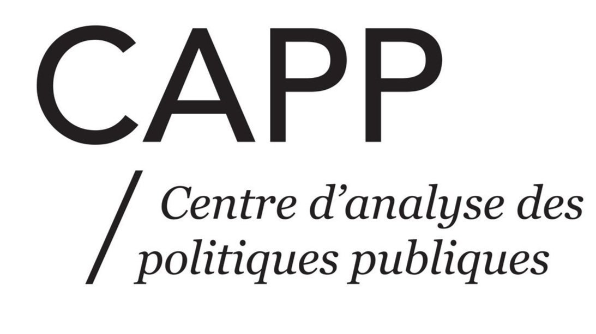

Introduction à R
Laurence-Olivier M. Foisy
2025-08-24
Les logiciels d’analyse de données


Pourquoi R?

Open source
- Gratuit
- Collaboratif
- Communauté active
- Stackoverflow
- r-bloggers
- Adapté aux besoins des utilisateurs
Pourquoi R?

Packages
- Offre une extension des fonctionnalités de base presque infinie
- Peux répondre à des besoins très spécifiques
- 21,744 packages sur CRAN (Comprehensive R Archive Network)
- Principal dépôt où sont hébergés les packages R
- Beaucoup plus sur GitHub
- En plus de CRAN, de nombreux chercheurs publient leurs packages sur GitHub, une plateforme de partage de code
Pourquoi R?

Reproductibilité
- Rendre les analyses reproductibles
- Permet de partager les analyses
- Les scripts R permettent de partager facilement le travail
- Permet de retracer les erreurs
- Partager le code
- Encourage la transparence et la collaboration dans la recherche
Pourquoi R?

Très utilisé en science sociale
- Beaucoup de ressources
- Les LLM (comme ChatGPT) sont très performants pour R
- Beaucoup de tutoriels orientés vers les sciences sociales
- Datacamp
- Swirl
- Codeacademy
Bref… important d’utiliser les mêmes outils que les chercheurs dans votre domaine
Installer R et RStudio
- C’est quoi la différence entre R et RStudio?
- R a été lancé en 1993 alors que RStudio a été lancé en 2011
- R est le moteur, RStudio est l’interface
- R est la calculatrice, RStudio est le bureau
- R est le langage de programmation, RStudio est l’environnement de développement
- RStudio facilite l’utilisation de R
- RStudio est un IDE (Integrated Development Environment)
À télécharger :
Concept important : Le chemin d’arborescence
- Votre R est toujours ouvert dans un dossier, et donc vous devez savoir où il est pour pouvoir importer des données
- La fonction
getwd()dans R permet de savoir où vous êtes - À tout moment vous devez savoir où vous êtes dans votre ordinateur pour pouvoir importer des données, exporter des graphiques ou mettre des fichiers en relation

~/Dropbox/Conferences/FSS_2024/atelier_fss_2024_03_15/data/cleanCES2011_1.rds
Concept important : Planifier avant de coder
La plus grosse erreur est de commencer à coder sans savoir ce que vous voulez faire
- Clarifer vos objectifs: Qu’est-ce que vous voulez faire?
- Nettoyer des données?
- Faire un graphique?
Les possibilités sont infinies, donc il est important de savoir où vous voulez aller
Concept important : Décomposer le problème
- Une fois que vous savez ce que vous voulez faire, il est important de décomposer le problème en petites étapes
- Un script R pour une seule tâche
- Bien nommer vos scripts pour savoir ce qu’ils font
- Exemples:
nettoyage_donnees.Rgraphique.R
- Chaque script doit être clair et facile à comprendre
- Commenter votre code avec des
#
Importer des données
- Les données sont souvent dans des fichiers Excel, CSV, ou autres
- On utilise des fonctions comme
read.csv()pour lire les fichiers
- On utilise des fonctions comme
- Dans cette ligne de code il y a plusieurs éléments importants:
- Le nom de l’objet :
dfdans ce cas-ci, c’est un dataframe - L’opérateur d’assignation :
<- - La fonction qui permet de lire le fichier :
read.csv() - Le chemin vers le fichier :
"chemin/vers/data.csv"
- Le nom de l’objet :
Chemins d’arborescence
Important de comprendre comment spécifier le chemin vers un fichier
Voici les deux façons de spécifier le chemin :
- Absolu:
/Users/username/Documents/projet/data/data.csv- Utile seulement sur votre ordinateur, un autre utilisateur ne pourra pas utiliser le même chemin
- Relatif:
data/data.csv- Utile pour partager le code avec d’autres utilisateurs
Différence entre mac et windows
- Mac:
/ - Windows:
\(il faut s’assurer de changer les\pour des/)
Importer des données
Autres fonctions pour importer des données dépendamment du format:
df <- readxl::read_excel("chemin/vers/data.xlsx")df <- readRDS("chemin/vers/data.rds")

Codons!
Installons quelques packages utiles pour l’analyse de données
Nous allons utiliser les données de l’étude électorale canadienne de 1965
Analyse rapide d’une variable
# Voir les metadonnées de la variable 'cps21_votechoice'
attributes(df$cps21_votechoice)
# Voir le nombre de valeurs pour chaque élément d'une variable
table(df$cps21_votechoice)
# Histogramme de la variable 'cps21_votechoice'
hist(df$cps21_votechoice)$permet d’accéder à une variable dans un dataframe.- On accède à la variable
cps21_votechoicedans le dataframedfavecdf$cps21_votechoice
Filter et sélectionner des variables
# Sélectionner des colonnes
# (par exemple, cps21_votechoice, Education et Agriculture)
df_selected <- df %>%
select(cps21_votechoice, cps21_education, cps21_yob)
# Filtrer les lignes pour inclure uniquement les gens
# avec une année de naissance supérieure à la moyenne
mean_yob <- mean(df_selected$cps21_yob, na.rm = TRUE)
df_filtered <- df_selected %>%
filter(cps21_yob > mean_yob)Modifier des variables
# Créer une nouvelle variable binaire "high_education"
attributes(df$cps21_education)
df_mutated <- df_filtered %>%
mutate(high_education = ifelse(cps21_education >= 9, 1, 0))
# Regrouper par "high_education" et calculer la moyenne de l'age
df_summarized <- df_mutated %>%
group_by(high_education) %>%
summarize(moyenne_age = mean(cps21_yob, na.rm = TRUE))
# Afficher le résultat final
print(df_summarized)Préparation des données pour la visualisation
# Nettoyage minimal pour le graphique
df_graph <- df %>%
select(cps21_votechoice, cps21_education, cps21_yob) %>%
mutate(
age = 2021 - as.numeric(cps21_yob),
age_group = ifelse(is.na(age), NA_character_,
ifelse(age < 30, "18–29",
ifelse(age < 45, "30–44",
ifelse(age < 65, "45–64", "65+")))),
educ_cat = case_when(
cps21_education %in% 1:6 ~ "Secondaire ou moins",
cps21_education %in% 7:8 ~ "Collège/CEGEP",
cps21_education %in% 9:11 ~ "Université+",
TRUE ~ NA_character_
),
votechoice = case_when(
cps21_votechoice == 1 ~ "Libéral",
cps21_votechoice == 2 ~ "Conservateur",
cps21_votechoice == 3 ~ "NPD",
cps21_votechoice == 4 ~ "Bloc Québécois",
cps21_votechoice == 5 ~ "Vert",
cps21_votechoice == 6 ~ "Autre",
TRUE ~ "Indécis"
)
) %>%
mutate(
age_group = factor(age_group, levels = c("18–29","30–44","45–64","65+")),
educ_cat = factor(educ_cat, levels = c("Secondaire ou moins","Collège/CEGEP","Université+")),
votechoice= factor(votechoice,levels = c("Libéral","Conservateur","NPD","Bloc Québécois","Vert","Autre","Indécis"))
)Visualisation avec ggplot2
Initialiser un graphique
ggplot(df_graph, ...): on part du dataframe nettoyé.aes(): on déclare les mappages esthétiques.x = votechoice→ catégories sur l’axe des x.fill = age_group→ couleurs par groupe d’âge.
Visualisation avec ggplot2
Ajouter un geom_() en barres
geom_bar()crée des barres en comptant les cas par catégorie.position = "dodge"place les barres côte à côte (comparaison directe des effectifs par âge).
Visualisation avec ggplot2
Ajouter des facettes (troisième variable)
ggplot(df_graph, aes(x = votechoice, fill = age_group)) +
geom_bar(position = "dodge") +
facet_wrap(~ educ_cat)facet_wrap(~ educ_cat)crée un panneau par niveau de scolarité.
Visualisation avec ggplot2
Ajouter des titres et des labels
ggplot(df_graph, aes(x = votechoice, fill = age_group)) +
geom_bar(position = "dodge") +
facet_wrap(~ educ_cat) +
labs(
title = "Âge et scolarité selon l'intention de vote",
x = "Intention de vote",
y = "Nombre de répondants",
fill = "Âge"
)labs()permet de documenter le graphique.title: message clair pour le public.x,y: axes explicites.fill: légende compréhensible (groupes d’âge).
Visualisation avec ggplot2
Ajouter un thème
ggplot(df_graph, aes(x = votechoice, fill = age_group)) +
geom_bar(position = "dodge") +
facet_wrap(~ educ_cat) +
labs(
title = "Âge et scolarité selon l'intention de vote",
x = "Intention de vote",
y = "Nombre de répondants",
fill = "Âge"
) +
theme_minimal()theme_minimal(): esthétique sobre et légère
Visualisation avec ggplot2
Sauvegarder le graphique
ggplot(df_graph, aes(x = votechoice, fill = age_group)) +
geom_bar(position = "dodge") +
facet_wrap(~ educ_cat) +
labs(
title = "Âge et scolarité selon l'intention de vote",
x = "Intention de vote",
y = "Nombre de répondants",
fill = "Âge"
) +
theme_minimal()
ggsave("vote_age_education_dodge.png", width = 10, height = 6)ggsave()exporte en image (PNG par défaut).- Spécifier
widthetheight
Bon codage!

Introduction à R